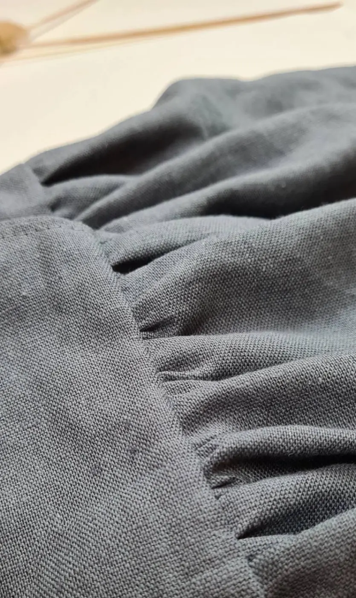

Ramsen, Pfalz seit 2021
 Handgemachte Einzelstücke
Handgemachte Einzelstücke
Röcke, Kleider, Kragen und warme Kleinigkeiten, genäht mit Hand und Herz in meinem Mini-Atelier mitten in der Pfalz.
01 Projekte
Galerie
02 Fertig & auf Maß
Shop
Fertige Einzelstücke und Lieblingsteile, die ich auf deine Maße nähe.
Gerade ist hier nichts zu haben. Schau bald wieder vorbei oder frag mich auf Instagram.
02 Termine
Märkte & Nähkurse
Hier findest du mich als Nächstes: mit meinen Stücken auf dem Markt oder mit dir an der Nähmaschine.
Nächste Termine
Feste Nähkurse
Jede Woche im Atelier – such dir aus, was zu dir passt.
03 Anprobe
Komm vorbei und probier an
Bei einer Anprobe messen wir zusammen, du fühlst die Stoffe und wir finden die richtige Länge. Ganz in Ruhe, ohne Kaufzwang.

04 Kontakt
Besuch nur nach Termin
Ich habe keine festen Öffnungszeiten. Frag einfach eine Anprobe an oder schreib mir auf Instagram, dann nehme ich mir Zeit für dich.
- Atelier67305 Ramsen, Pfalz
Genaue Adresse bekommst du mit der Terminbestätigung. - TerminAnprobe anfragen
- Shopetsy.com/shop/FloraundGrete
- Instagram@cathrinraasch.atelier
Ramsen 67305 · Pfalz
Die Karte kommt von Google Maps. Erst wenn du sie lädst, werden Daten an Google übertragen.
05 Fragen
Gut zu wissen
Deine Frage ist nicht dabei? Schreib mir einfach über Etsy oder Instagram.
06 Kundenfeedback
Was im Postfach landet

07 Steckbrief
Hi, ich bin Cathrin.